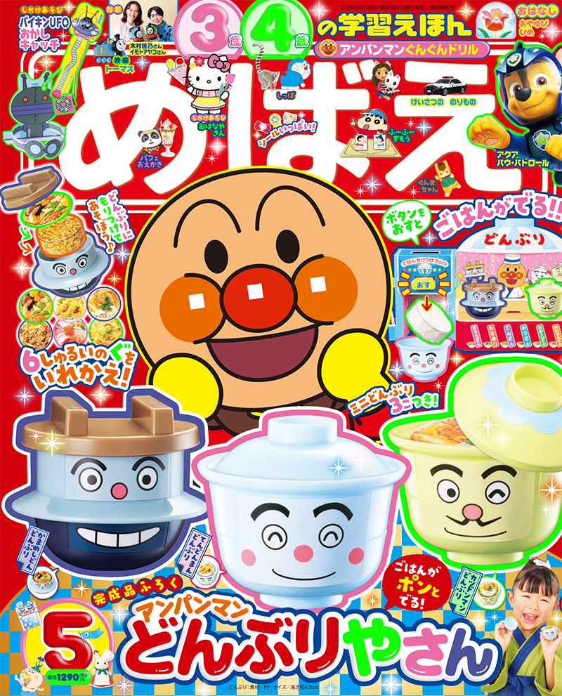

日本親子選物誌

小學館幼兒雜誌・2026年5月號
めばえ
2026年 5月号
附錄：麵包超人神奇蓋飯店遊戲組 按一下就能蹦出白飯！
這期主打麵包超人丼飯店遊戲組。孩子可以把白飯「ポン」地盛到小丼碗裡，再選擇不同配料，完成一碗自己的丼飯，延伸成親子一起玩的日式餐廳扮演遊戲。
麵包超人丼飯店遊戲出飯機關配料更換角色扮演
本期看點
《めばえ》是小學館面向 3、4 歲幼兒家庭的學習繪本雜誌，常以人氣角色、生活主題與可操作付錄吸引孩子。2026 年 5 月號的重點是「麵包超人神奇蓋飯店遊戲組 按一下就能蹦出白飯！」，把孩子熟悉的餐廳點餐、盛飯、選配料流程做成可動手玩的迷你店家場景。
餐廳扮演明確孩子可以模擬開店、點餐、盛飯、上菜，玩法直覺。
出飯機關有驚喜按下機關後飯會落入丼碗，增加重複遊玩的動機。
日式生活主題丼飯題材容易連結日本飲食文化，也適合親子共玩時介紹食物名稱。
付錄介紹：麵包超人神奇蓋飯店遊戲組 按一下就能蹦出白飯！
這個附錄的商品力在於「小孩看得懂、玩得出流程、大人也容易示範」。不只是角色圖案，而是能完成一整套店家遊戲。
✅ 盛飯機關把丼碗放在機器下方，按下後白飯掉入碗中，形成明確操作回饋。
✅ 迷你丼碗搭配どんぶりまんトリオ角色設計，視覺可愛，也容易拍成商品細節圖。
✅ 配料選擇可替換不同具材，讓孩子反覆組合、假裝接單與出餐。
✅ 店家角色扮演孩子可以扮演老闆、客人、外帶客，延伸語言互動與生活情境。
選物觀點：這類「食物＋機關＋角色」的日本幼兒雜誌附錄，很適合電商短影音銷售。只要拍出按下機關、飯掉入碗中、最後完成丼飯三個畫面，家長就能很快理解玩法價值。
影片示範
可搭配影片觀看實際組裝與玩法，尤其適合放在商品頁或社群貼文中，讓家長快速理解附錄怎麼玩。
日本親子選物誌觀點
這本適合放在「日本幼兒雜誌附錄」或「麵包超人角色扮演玩具」類別中介紹。比起單純貼紙或閱讀型雜誌，這期的附錄具備比較高的展示性：有機關、有流程、有完成品，也容易讓孩子重複玩。
電商頁面建議把主軸放在「在家開一間麵包超人丼飯店」。主圖可放雜誌封面與完成後的丼飯店組；第二張可用步驟圖呈現「放碗 → 按下出飯 → 選配料 → 完成丼飯」。這樣比只展示封面更能提高點擊與轉換。
商品資訊
| 日文書名 | めばえ 2026年 5月号 |
|---|---|
| 中文頁名 | めばえ (5月/2026/附麵包超人出飯丼飯店遊戲組) |
| 出版社 | 小學館 |
| 発売日 | 2026年3月26日頃 |
| 定價 | 1,290円（税込） |
| 主要附錄 | アンパンマン ごはんがポンとでる！どんぶりやさん |
| 適合族群 | 喜歡麵包超人、餐廳扮演、食物主題遊戲與日本幼兒雜誌附錄的親子家庭。 |